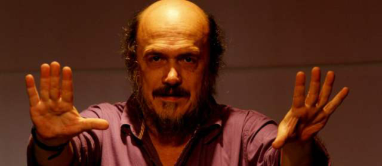

Cristóbal Peláez es un director muy “tiernito”
Por Mónica Quintero Restrepo
El Matacandelas no es solo un teatro. Allá hay un perro con nombre de poeta, unas paredes no vacías y unos personajes que conversan, que abrazan, que bailan a veces, que no bailan nunca, que siempre dicen algo. Y está Cristóbal Peláez con su barba no crespa, con su voz algo ronca. Está él, que hizo un teatro para él y para sus amigos, que son muchos. También para todos los demás.

¿En qué montaje anda?
"Los cantares de Ezra Pound con Luigi María Musati, más una nueva obra infantil".
¿Qué tiene el teatro que le gusta tanto?
"Libertad, exploración, camaradería, poesía, ritualidad...".
¿Por qué repiten tanto que el teatro es innecesario?
"No nunca, en un mundo tan complejo y horroroso se hace indispensable".
¿Cuando niño, ya había algo que le insinuara ser actor?
"Esa manía de andar remedándole la voz a todo el mundo".
¿Su vida es casi una obra de teatro?
"Antiteatral, porque es una vida sencilla, modesta. Algo de monje tendré".
¿Cómo es como director?
"Actores y actrices dicen que soy el director más tiernito del mundo".
Vivió al azar mucho tiempo, cuando estuvo en Madrid. ¿Esa es su vida de novela?
"Fue seguir un guión general de todas las novelas de picaresca, género que había devorado con intensidad. Entre una obra de teatro y otra, ejercí mil oficios de sobrevivencia. Mucho tiempo después caí en la cuenta de que había hecho sin saberlo el curso para poder fundar y dirigir Matacandelas".
¿Colombia le hace más fácil la vida al dramaturgo?
"Colombia es un país dramático por excelencia, una cantera inagotable. Aquí el teatro más que necesario es una verdadera urgencia".
¿El teatro es también una manera de vivir al azar?
"Matacandelas es lo contrario a lo normativo, a eso académico que es tan espantoso. Llevamos vida de hippies".
La consigna de William Carlos William: "Señoras y señores, arremangaos, que vamos a cruzar el infierno", que ha citado por ahí. ¿El teatro es un infierno?
"Qué va, esa frase la utilizo para espantar advenedizos".
¿Por qué hizo un teatro?
"Porque detesto la disciplina capitalista y todo el formalismo de sus instituciones, porque no quería ser un esclavo, porque quiero vivir y morir liberto, compartiendo en el teatro las alegrías y las penas de la humanidad. El escenario es el hogar de la otredad".
¿Cómo fue ese personaje de la primera obra que hizo?
"Una entrada rápida en un sainetico: "El artículo 255", y un texto: ¡Zapateta, que muchacho tan bruto… Quedé anclado en un escenario de por vida".
¿Sufre mientras los otros ven la obra?
"La sufridera es inevitable, un vicio de los nervios. Tengo plena confianza en mis actores".
¿Se acuerda de ese día que dijo, vamos a fundar el Matacandelas?
"En la cafetería Capri, a un costado de la placita de Flórez".
¿Y cómo ha cambiado ese primer lugar del que es ahora?
"Nunca volví a entrar. La nostalgia es una porquería".
¿Se le escurre al trabajo o el teatro es un trabajo?
"Los trabajadores miran un reloj con el anhelo de salida, nosotros lo miramos tratando de que el tiempo se dilate".
¿Los teatreros siguen viviendo de puro milagro?
"Los hay que viven como príncipes".
¿El teatro del Matacandelas hace un teatro oscuro?
"Filosófica y poéticamente de una gran luminosidad".
¿Por qué a veces hay obras que se demoran tanto?
"Porque el teatro es un arte berriondamente difícil".
¿El teatro es de amigos?
"Sí, porque montar una obra de teatro es lo mismo que planear un atraco, debe hacerse entre amigos, entre cómplices".
¿Rituales?
"El tinto de la mañana y del mediodía, la mesa de conversación y de licor con tres o cuatro amigos después de la función (si hay lluvia mejor), porque el teatro siempre será celebración, fiesta".
¿Qué le gusta de ser dramaturgo?
"La literatura, la arquitectura".
¿Y de ser director?
"La acción, la ingeniería".
¿Y de ser actor?
"El embuste".
¿Sí vamos a teatro?
"Hay poco público y queremos tener mayor audiencia. Es una ambición lícita".
¿Al teatro hay que ayudarlo?
"El teatro ha sufrido la misma segregación de la mujer, de los negros, de los homosexuales, de los campesinos, de los obreros. Eso le pasa por ser un arte tan contundente, tan dinámico, tan crítico".
¿Verdad que tiene un homónimo en perro?
"No lo sé. Mi amigo el pintor Memo Vélez le puso mi nombre a su cafetera".
¿Por qué le pone a los perros del Matacandelas el nombre de sus amigos? Ahora hay un Jaime Jaramillo Escobar, pero terminado en X-505...
"Es la patafísica del afecto".
Publicado el 2 de mayo de 2013 por elcolombiano.com